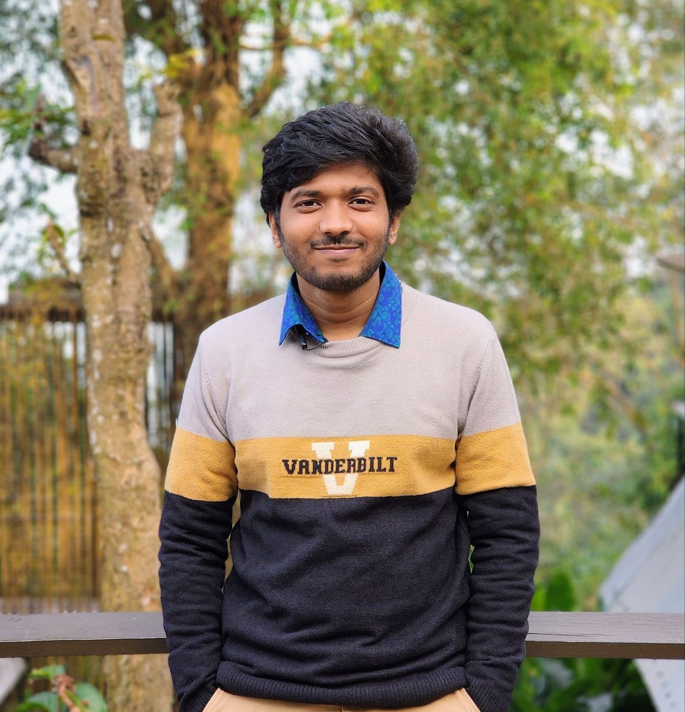

Saurov Chandra Biswas — collected portfolio data
Everything gathered in the data-collection pass, rendered plainly for review. This is not the portfolio design — it exists so you can correct the facts before anything is built. Collected 2026-08-06.
Identity
- name
- Saurov Chandra Biswas
- title
- Senior Software Engineer, KubeDB Team Lead
- company
- Appscode Inc.
- location
- Dhaka, Bangladesh
- hometown
- Barishal, Bangladesh
- years experience
- 3+ (since Apr 2023)
- github created
- 2019-03-19
Positioning line
Cloud-native distributed systems in Go - high availability, cross-datacenter DR, and Day-2 automation for stateful workloads.
Summary
Software Engineer with 3+ years building cloud-native distributed systems in Go, now leading a 12-engineer team. Specialize in Kubernetes operators for stateful workloads - high availability, cross-datacenter disaster recovery, and Day-2 automation at enterprise scale.
Profession
Senior Software Engineer, KubeDB Team Lead · Appscode Inc.
Progression
| When | What |
|---|---|
| Apr 2023 | Joined as Software Engineer |
| Apr 2025 | Promoted to Senior Software Engineer (2 yr) |
| Apr 2026 | Increment + Staff Software Engineer title; CEO asked him to lead the KubeDB team (DO NOT PRINT the Staff title) |
| Feb 2026 - | De-facto lead of the KubeDB team, 12 engineers |
Scope
- Leads a 12-engineer team: sprint/iteration management on GitHub Projects, code review, release sign-off, on-call rotation, onboarding docs.
- Owns the software release lifecycle - features to stability to production rollout to public announcement.
- Core owner of PostgreSQL on Kubernetes across ~10 repositories.
- On-call for enterprise escalations across France, Sweden, USA, India, Vietnam, Bangladesh.
Achievements
- Promoted twice in three years; leads a 12-engineer team and owns the release lifecycle - 9 KubeDB releases shipped.
- Built PostgreSQL HA on Raft leader election with continuous LSN propagation over gRPC, cutting failover to 2-10 seconds.
- Automated cross-datacenter database failover - outage detection and promotion now run unattended, replacing a recovery path that waited on someone noticing the outage before failing over by hand, often out of hours.
- Built Read Replica: standbys stay attached at minimal CPU and memory, so a campaign peak is absorbed by scaling them with one OpsRequest in minutes instead of re-syncing a multi-terabyte dataset over hours or days.
- Automated Day-2 ops - autoscaling, self-healing, upgrades, TLS/credential rotation, and PITR - replacing work that was previously manual and per-cluster.
- Delivered the Oracle Kubernetes operator with a Data Guard coordinator for standby provisioning, replication, and switchover.
- Built an internal AI prompt library (117 prompts), closing long-outstanding feature parity across 25+ database engines.
- Proved resilience with Chaos Mesh - 16+ fault-injection experiments against HA Postgres clusters.
- Sharded operator workloads with consistent hashing to run 2000+ Postgres clusters on one control plane.
Independent side engineering (remote)
- Built a Go microservice automating multi-tenant application deployments on GKE, replacing a manual per-tenant process.
- Go + Gin service exposing REST APIs and Server-Sent Events for real-time deployment progress, driving Helm releases on GKE.
- Tenant isolation per namespace with resource quotas and network policies for fair, secure resource sharing.
- Multi-tenant observability with Prometheus and Grafana: per-tenant metric isolation enforced via kube-rbac-proxy and RBAC, with a query frontier that authorizes and namespace-scopes every query.
- Istio service mesh for Ingress/Egress control, TLS termination, load balancing, and inter-service routing.
- GitOps delivery pipeline on Helm + ArgoCD; Terraform modules provisioning GKE, IAM, VPC, and GCS.
Education
BS in Computer Science and Engineering
- institution
- University of Barishal, Barishal, Bangladesh
- dates
- 2017-01 – 2023-03
- CGPA
- 3.56 / 4.00
- coursework
- Operating Systems · Data Structures · Algorithms · Computer Networks · DBMS · Artificial Intelligence · Machine Learning · Software Engineering · OOP · Discrete Mathematics
Earlier academic record
| Level | Institution | Result | Distinction |
|---|---|---|---|
| HSC (Higher Secondary Certificate) | Amrita Lal Dey College | GPA 5.00 / 5.00 | — |
| SSC (Secondary School Certificate) | Bakergonj J.S.U Model High School | GPA 5.00 / 5.00 | — |
| JSC (Junior School Certificate) | Bakergonj J.S.U Model High School | GPA 4.50 / 5.00 | General Scholarship |
| PSC (Primary School Certificate) | Bakergonj Model Government Primary School | — | Talent Pool Scholarship |
Leadership
President and Problem Setter, Programming Club, CSE - University of Barishal
Ran multiple programming competitions and bootcamps for junior programmers under their leadership.
Certifications
EF SET English Certificate - C1 Advanced
- issuer
- EF SET (EF Standard English Test)
- level
- C1 Advanced
- score
- 61 / 100
- sections
- Reading · Listening
- awarded
- 2025-04-02
- certificate
- view PDF
Placement: A 'Languages' line near Education: 'English - C1 Advanced (EF SET, 2025)'. Worth having, since the site targets European and North American employers. Show the level, not the raw 61/100 - CEFR level is the meaningful unit and a bare score out of 100 reads lower than it is.
Contact
- email (personal)
- sourav.cse4.bu@gmail.com
- email (work)
- saurov@appscode.com
- phone
- +880 1841-978367 — not published
- github
- https://github.com/souravbiswassanto
- https://linkedin.com/in/sourav-biswas-santo
- website
GitHub metrics
Output by year
| Year | PRs authored | PRs reviewed |
|---|---|---|
| 2023 | 39 | 5 |
| 2024 | 159 | 91 |
| 2025 | 180 | 88 |
| 2026 | 355 | 358 |
Top repositories by PRs authored
| Repository | PRs |
|---|---|
| kubedb/postgres | 98 |
| kubedb/installer | 63 |
| kubedb/ops-manager | 52 |
| kubedb/apimachinery | 48 |
| kubedb/pg-coordinator | 43 |
| kubedb/postgres-init-docker | 29 |
| kubedb/prompt-library | 19 |
| kubedb/postgres-restic-plugin | 18 |
| kubedb/webhook-server | 17 |
| kubedb/provisioner | 17 |
| appscode/blog | 17 |
| kubedb/docs | 13 |
By organisation
kubedb 633 · appscode 20 · kubeops 18 · stashed 10 · appscode-images 9 · appscodelabs 9 · kmodules 8 · gomodules 4 · kubevault 3 · kluster-manager 3 · kubestash 1 · oracle 1
Projects
KubeDB PostgreSQL
Production-grade Kubernetes operator for PostgreSQL: Raft-based HA and failover, streaming and synchronous replication, WAL archiving with PITR, and the full Day-2 operations surface.
- Raft leader election with continuous LSN propagation over gRPC - failover in 2-10 seconds.
- Two cross-datacenter DR tiers: an OCM control plane for automatic promotion, plus a remote replica for manual DR.
- Remote replica doubles as a live migration path off self-managed Postgres, cutting over with a 37-43 s write gap.
- Synchronous replication API (SYNC_REPLICATION_MODE, NUM_SYNC_REPLICAS, SYNC_COMMIT_LEVEL) wired through init scripts for PG v9-v18.
- Arbiter node support end-to-end: coordinator, provisioner, vertical scaling, volume expansion, odd-replica handling.
- pg_rewind hardening: no-common-ancestor case, checkpoint-before-rewind, base-backup fallback, LSN zero-padding fix.
- Split-brain fix plus automatic configuration tuning.
- Postgres 13 -> 18 catalog support; blocked unsafe cross-baseOS and cross-distro upgrades.
- Extensions shipped as first-class: pgvector, postgis, pgaudit, pg_repack, pg_cron - images, catalogs, e2e tests, docs.
- Docker Hardened Images, data-directory permission hardening, IPC_LOCK/SYS_RESOURCE capabilities, run-as-nobody.
Related writing & talks
KubeDB PetSet
A fork of the native StatefulSet controller that orchestrates pods across geo-distributed, multi-cloud Kubernetes clusters.
- Distributed PetSet: creates and manages pods across multiple Kubernetes clusters via Open Cluster Management.
- Gives pods stable identity and network IPs so pod-to-pod communication survives cluster boundaries.
- cluster.local -> slice.local domain handling for Kubeslice; FindDomain abstraction.
- Placement-policy validation and panic fixes.
Postgres DC-DR Control Plane
An OCM addon-framework control plane that detects the loss of an entire datacenter and hands the primary role to a surviving site without a human in the loop.
- Coordinates automated cross-datacenter promotion for Postgres clusters.
- DR agent leadership semantics designed so exactly one datacenter can promote - no dual-primary state.
- Replaces a recovery path whose slowest step was a human noticing the outage, usually out of hours.
- Validated on Singapore <-> London clusters, including failback.
Operator Shard Manager
A consistent-hashing controller that distributes owned resources across operator replicas, so one control plane can reconcile thousands of database clusters in parallel.
- Hash ring with rebalancing on replica churn; handles deleted pods and StatefulSet membership changes.
- Correctness fixes to the hashing library (gomodules/consistent): division bug, panic on a single member, uneven distribution.
- Rolled out to provisioner, ops-manager, recommender, and Postgres OpsRequests; ShardConfig CRD/RBAC and multiple shard keys.
- Enables 2000+ Postgres clusters on a single control plane.
Related writing & talks
PostgreSQL Read Replica
Decoupled replica count from replica size so an e-commerce customer with a multi-terabyte Postgres dataset could absorb campaign peaks in minutes instead of paying for peak capacity all year.
- Customer ran a multi-terabyte dataset and needed many more replicas at peak; adding one meant re-syncing the whole dataset - hours to days.
- Design: keep replicas running permanently at minimal CPU/memory, streaming continuously, with pgpool balancing reads.
- At campaign time one PostgresOpsRequest vertically scales the existing replicas - no data re-sync.
- Hours-or-days becomes minutes, and peak capacity is no longer paid for 24/7.
Oracle on Kubernetes
Brought Oracle into KubeDB: API and CRDs, operator, provisioner, webhooks, installer wiring, plus an oracle-coordinator implementing Data Guard.
- oracle-coordinator for Data Guard mode: standby provisioning, three-way replication, switchover.
- Oracle API + CRDs across apimachinery and crd-manager; image registry and pull-secret handling.
- oracle-exporter release CI; prebuilt-data-directory Oracle images to cut dev/test provisioning time.
Related writing & talks
KubeDB Prompt Library & AI-assisted feature parity
Built an internal prompt library and a repeatable develop-test-fix-deploy loop, then used it to close long-outstanding feature gaps across the whole database fleet.
- 117 of 204 prompt files across 17 domains: docs (29), gitops (22), recommendation (17), tests (14), ops (9), autoscaler (8), and more.
- Per-repo AGENTS.md / CLAUDE.md context files so agents understand pod-role and architecture before touching code.
- TLS renewBefore honored in cert ops - 22 engines. DoNotTerminate treated as Halt when webhook bypassed - 21 engines. Service preservation via resource-policy: keep - 12 engines. gofmt/toolchain sweep - 20 engines.
- New engine onboarding end-to-end across 6-8 repos each: Aerospike, DocumentDB, Neo4j, HanaDB, ClickHouse, Cassandra.
- Result: 148 PRs in June 2026, the majority merged at normal review quality.
Path-Pulse IoT Backend
Backend for a fitness/IoT tracker: wearable and GPS devices stream location and pulse data; the service computes distance and pulse alerts and manages users, groups, and events.
- gRPC service fronted by a gRPC-Gateway exposing a REST/JSON API.
- Relational data in Postgres, time-series in InfluxDB, in-memory cache in front of Postgres reads.
- Vertical-slice layout per domain: handler -> service -> db, with protos generating the Go surface.
go-pgtune
A Go port of pgtune - library plus HTTP API for generating PostgreSQL tuning configurations, output-compatible with pgtune.leopard.in.ua, with zero external dependencies in the core and built for use inside cloud-native controllers.
- Became the basis for KubeDB's automatic Postgres configuration tuning.
Multi-tenant GKE platform work
Automated multi-tenant deployment and observability on GKE: a Go control-plane service, per-namespace tenant isolation, a GitOps delivery pipeline, and per-tenant metric isolation.
- Go + Gin microservice with REST APIs and Server-Sent Events driving real-time Helm deployments on GKE.
- Tenant isolation per namespace with resource quotas and network policies.
- Query frontier authorizing every Prometheus query and injecting a namespace label, enforced via kube-rbac-proxy and RBAC.
- Istio for Ingress/Egress, TLS termination, load balancing and routing; Helm + ArgoCD GitOps; Terraform for GKE, IAM, VPC, GCS.
Smaller personal builds
A BitTorrent client, a concurrent file server, a Postgres high-write-load generator, a Colly web scraper, and a repo of reusable agent skills and debugging playbooks.
Case studies
These are the centrepiece of the site. Each is a real, measured piece of work — check the facts and the framing carefully, because these are what a hiring manager will actually read.
Zero data loss across datacenters - proved by destroying the primary
The test wasn't a failover drill. We deleted the primary with its PVCs and checked whether the other continent still had every byte.
- Cross-cluster synchronous replication between two KubeDB Postgres clusters, quorum configured as synchronous_standby_names = FIRST 2 (...) so that with a two-replica primary the sync set is always one local standby plus one cross-cluster standby - regardless of which pod currently holds the primary role.
- Verification: destroyed the primary cluster with deletionPolicy: Delete, wiping its PVCs. The DR site's content fingerprint was identical, with no promotion performed - the data was durable at commit time, not recovered afterwards.
- Found and documented a bootstrap deadlock: enabling synchronous replication before the DR replica is streaming blocks every commit, including KubeDB's own bootstrap writes, so the database never reaches Ready.
Published alongside this work
Migrating self-managed Postgres into Kubernetes with a 37-second write gap
The cutover budget for a production database is measured in seconds. We measured ours.
- Built and documented a migration path from self-managed PostgreSQL - bare StatefulSet, remote-datacenter VM, and hardened install - into KubeDB, using the remote-replica mechanism as the transport.
- Measured write gap: 43 s for the bare flavour, 37 s for the hardened one, where the source superuser was never shared.
- libc/collation mismatch on glibc-source to musl-image migrations: why REFRESH COLLATION VERSION fails, the datcollversion = NULL remedy, and a pre-cutover query that counts indexes needing REINDEX.
- Verifiable write-stop procedure: freeze pg_current_wal_lsn() across two samples and catch up on pg_wal_lsn_diff(...) >= 0 rather than equality, because the source still emits checkpoint WAL after quiescing.
- cert-manager CA-rotation trap: still-valid leaf Secrets get reused, so deleting the Certificate alone leaves 'tlsv1 alert unknown ca' - the Secrets must go too.
The cost of always being ready for peak
Their only way to survive a campaign was to pay for campaign capacity every day of the year.
- An e-commerce customer held a multi-terabyte PostgreSQL dataset. Load was modest most of the time but spiked hard during campaigns, when they needed many more read replicas.
- Scaling out at that moment meant re-syncing the whole dataset from the primary, per replica - hours to days - so the only safe option was running every replica full-size, permanently.
- The fix was to decouple replica count from replica size: keep the replicas running continuously at minimal CPU and memory, streaming, with pgpool load-balancing reads onto them so the primary is no longer permanently over-provisioned.
- When a campaign starts, one PostgresOpsRequest vertically scales the existing replicas. No re-sync, because they were never behind. Hours or days becomes minutes.
Breaking PostgreSQL on purpose, 16 different ways
High availability is a claim until something kills your primary at 3 a.m. So we killed it ourselves, repeatedly.
- 16+ Chaos Mesh experiments against an HA KubeDB Postgres cluster: pod kill, network faults and partitions, resource exhaustion.
- Published as a public engineering deep-dive, which then seeded a team-wide chaos-testing series - reviewed the MySQL, MariaDB, Redis and InnoDB-cluster posts that followed.
Published alongside this work
One control plane, 2000+ Postgres clusters
A single operator replica reconciling every database in the fleet is a bottleneck with a bad failure mode.
- Built a consistent-hashing shard manager that distributes owned resources across operator replicas, so reconciliation runs in parallel and the ring rebalances when replicas churn.
- Fixed three correctness bugs in the hashing library along the way: a division bug, a panic on a single member, and uneven distribution.
- Rolled out to provisioner, ops-manager, recommender and Postgres OpsRequests, with a ShardConfig CRD and support for multiple shard keys.
- Backed by a large-scale test suite - 8 scripts, 3,557 lines - that bulk-provisions 50 to 1500+ Postgres clusters, benchmarks time-to-Ready, and fires batch OpsRequests across 6 operation types.
Published alongside this work
Hardening the CI supply chain after an incident
A CI workflow deleted GitHub organizations. The response was a team one, run with our CEO and senior engineers - this was my part of it.
- Pinned GitHub Actions to commit SHAs and added explicit least-privilege permissions blocks per job, starting with one repo and then across the fleet.
- Replaced ambient GITHUB_TOKEN usage with scoped GitHub App tokens in release-tracker workflows, and fixed the resulting regressions across 10+ repositories.
- Audited which workflows can write commits into other repos and deliberately scoped those tokens to workflows: write.
- Added merge-automation guards after an accidental direct push to master, and adopted Docker Hardened Images for the PostgreSQL builds.
Closing feature parity across 25+ database engines with an agent loop
Some gaps stay open for years not because they are hard, but because they are 22 near-identical changes.
- Authored 117 of 204 prompt files in an internal library spanning 17 domains, plus per-repo context files so agents understand pod roles and architecture before editing.
- Built a repeatable live develop -> test -> fix -> deploy loop driven by those prompts.
- Used it to fan out single changes across the fleet with verification: TLS renewBefore in cert ops (22 engines), DoNotTerminate treated as Halt (21), service preservation (12), a gofmt/toolchain sweep (20).
- Onboarded new engines end-to-end across 6-8 repos each: Aerospike, DocumentDB, Neo4j, HanaDB.
- 148 PRs merged in June 2026 at normal review quality.
Release lifecycle
Owns the KubeDB release lifecycle end to end - features, stability, production rollout, and the public announcement. Nine releases shipped, each with an announcement blog authored personally.
| Release | Date | Announcement blog (authored) |
|---|---|---|
| v2026.7.10 | 2026-07-10 | Read |
| v2026.6.19 | 2026-06-19 | Read |
| v2026.4.27 | 2026-04-27 | Read |
| v2026.2.26 | 2026-02-26 | Read |
| v2026.1.19 | 2026-01-19 | Read |
| v2025.5.30 | 2025-05-30 | Read |
| v2025.3.24 | 2025-03-24 | Read |
| v2025.02.19 | 2025-02-19 | Read |
| v2024.8.21 | 2024-08-21 | Read |
Supporting release engineering
- appscodelabs/release-automaton (8 PRs) - added documentdb-coordinator, Aerospike, neo4j-backup-plugin, qdrant-restic-plugin, hanadb-coordinator, migrator CLI tags, and physical-backup image tags to the release process.
- kubedb/installer (63 PRs) - catalog and version publishing, webhook configuration wiring, RBAC, feature gates, fresh-install and catalog-refresh fixes.
Writing & speaking
Featured deep-dives
- Chaos Testing KubeDB PostgreSQL: Building Resilience with Chaos Mesh
- Automating PostgreSQL Operations In Kubernetes Using KubeDB
- Operator Shard Manager
- PostgreSQL WAL archiving on NFS
Documentation authored
- Postgres automated failover & disaster recovery
- Distributed Postgres across multiple clusters
- Remote replica for datacenter failover and failback (+1,045 lines, Singapore <-> London validated)
- Zero-data-loss cross-cluster synchronous replication (+810 lines)
- Migration of self-managed Postgres into KubeDB (+490 lines)
- Auto configuration tuning (pgtune)
- PostgreSQL extensions guide + modernized streaming-replication docs
- Postgres archiver concepts
- Arbiter, restart, reconfigure, reconfigure-TLS, autoscaler guides
- Supported-features tables for all KubeDB databases
Internal writing
- Tiered Rancher/Harvester/Longhorn troubleshooting curriculum (~15 documents, beginner -> senior): events-first triage, timeline correlation, scheduling-vs-mounting, failure signatures, root-cause discipline, Longhorn internals, QEMU/guest-level debugging
- KubeVault deployment guide (YAML -> Vault command mapping), KubeVault mental model, namespace-scoped multi-tenancy with hub-spoke OCM architecture
- Per-repo AGENTS.md / CLAUDE.md engineering context files
- Code reviews: migrator CLI, DocumentDB ops, DC-DR design
Speaking — recordings
Watch: https://youtu.be/Jd3uc7t69Ec
Watch: https://youtu.be/sxhzDyoko7M
Skills
- languages
- Go · C++ · Bash · Python (basic) · SQL
- kubernetes
- Custom Controllers / Operators · CRDs · client-go · kubebuilder · Helm · Open Cluster Management · Kubeslice · Istio · OpenShift · Rancher / Harvester · k3s · TopoLVM · Longhorn
- databases
- PostgreSQL · Oracle Data Guard · pgpool · WAL archiving / PITR · wal-g · InfluxDB · MySQL / MariaDB / MongoDB (operator-level)
- distributed systems
- Raft consensus · Leader election · Consistent hashing · Sharding · Multi-cluster orchestration · Synchronous replication · Split-brain avoidance
- cloud devops
- AWS · GCP / GKE · Azure · Linode · Terraform · ArgoCD · GitOps · GitHub Actions · Docker · CI/CD · Supply-chain hardening
- observability
- Prometheus · Grafana · OpenTelemetry · kube-rbac-proxy · Chaos Mesh
- protocols security
- gRPC · REST · TLS / mTLS · cert-manager · Vault / KubeVault · RBAC
- practices
- System design · Code review at volume · Release management · Technical writing · AI-assisted development · On-call / incident response · Mentoring
Enterprise impact
- on-call regions
- France · Sweden · USA · India · Vietnam · Bangladesh
- how customers are described
- a global telecom equipment vendor · a European carrier · an agritech company · a cloud platform provider · an e-commerce customer
- platforms
- OpenShift · Rancher / Harvester / Longhorn · TopoLVM · GKE · AWS (IRSA) · Azure · Minio · Linode
Representative escalations solved
- restic-plugin nil-pointer crash on credential load - patched master and release-0.29
- pgpool max_pool default 15 -> 4 with validation, fixing connection exhaustion
- pod anti-affinity behaviour change between releases
- replication-slot primary_conninfo missing dbname; hot_standby with ReplicationSlot WAL policy
- timeline divergence and standby init failures
- collation fix for a customer cluster; dedicated Postgres 14.19 build with custom capabilities for a carrier
- volume-expansion API fix for a fintech customer
Competitive programming
Primary profiles
| Platform | Handle | Peak | Solved | Contests |
|---|---|---|---|---|
| Codeforces | _Dormammu_ | 1789 Expert | 598 | 150 |
| CodeChef | hiro_hamada2 | 2064 5-star / Yellow | 150 | 28 |
| LeetCode | Hiro_hamada | 1824 | 186 | 5 |
| Toph | Sourav1234 | 1888 | 190 | 67 |
Divisional Champion ×5
Divisional Champion (Barishal Division) five times across 2021-2022 - ICPC Dhaka Regional 2021 and 2022, and the BUET, RUET and AUST inter-university contests in 2022.
This is the strongest single line in the whole competitive-programming record and it was buried. Best team from an entire administrative division, repeatedly, against the national field - it says more than any individual rating, and it is a title rather than a rank, so it needs no percentile context to land.
- ICPC Dhaka Regional 2021 - 11th of 165
- ICPC Dhaka Regional 2022 - 13th of 162
- BUET CSE Fest IUPC 2022 - 15th of 110
- RUET CSE Fest IUPC 2022 - rank to confirm
- AUST CodeFiesta IUPC 2022 - 41st of 105
ICPC record
- 2021 ACM ICPC Dhaka Regional — 11th of 165 teams from 110 universities - Divisional Champion (Barishal Division)
- 2022 ACM ICPC Dhaka Regional — 13th of 162 teams - Divisional Champion (Barishal Division)
- 2022 ICPC Asia West Continent Contest — Participated
- 2023 ICPC Asia West Continent Contest — Participated
- 2021 ICPC Dhaka Regional Preliminary — 17th of 1700+ teams (Team_Robust)
- 2020 ICPC Dhaka Regional Preliminary — 56th of 1280 teams (top 4.5%)
- 2019 ICPC Dhaka Regional Preliminary — 150th of 1708 teams (top 8.7%)
- 2018 ACM ICPC Dhaka Regional — Honorable Mention
Global contests
- CodeChef SnackDown 2021 — Top 1% overall; 1012th/36341 qualifiers, 1646th/20429 Round 1A, 429th/3000 pre-elimination, 361st/580 elimination
- Meta (Facebook) Hacker Cup 2022 — Top 4.5%
- Meta (Facebook) Hacker Cup 2021 — Top 7.24% qualification, top 8.8% Round 1 (1124th/12692)
- Google Code Jam 2022 — Top 2.7% qualifiers (889th/32750), top 15% Round 1B; top 5.9% overall
- Google Code Jam 2020 — Participated
- Google Kick Start 2022 — 1842nd/17500 Round A, 1366th/8100 Round D
- Google Kick Start 2021 — Top 15% Round F (1217th/8500), top 16.7% Round G (1589th/9500)
- CodeChef UWCOI 2021 (Singapore) — 8th in Bangladesh, 157th/2865 worldwide
- International Coding Challenge, CodeChef — 6th of 130, outperforming several 7-star and many 6-star coders
National contests
- BUET CSE Fest IUPC 2022 — 15th of 110 teams - Divisional Champion
- RUET CSE Fest IUPC 2022 — 32nd of 105 teams - Divisional Champion
- AUST CodeFiesta IUPC 2022 — 41st of 105 teams - Divisional Champion
- BRAC University JayJatra'50 individual contest — 14th of 140 (top 10%)
- MIST NCPC 2020 — Honorable Mention
- BUET CSE Fest IUPC 2018 — Honorable Mention
Awards
- 5,200 BDT for Divisional Champion, ICPC Dhaka Regional 2021
- 6,000 BDT for a top-15 finish, BUET IUPC 2022
- Meta Hacker Cup T-shirt (top 2000, Round 2)
- CodeChef SnackDown 2021 T-shirt and certificate
- 250 CodeChef laddus, UWCOI 2021
- Amazon gift cards: 1225th/14285 Grand Coding Contest and 34th of 2171 (top 50 awarded), Newton School 2022
Problem setting
- Set an algorithmic problem for a public CodeChef contest (ALNALC, difficulty 2745): https://www.codechef.com/SEP221A/problems/ALNALC
- Set 10+ algorithmic problems for intra-department and HackerRank contests
Photos
Drop the image files here: /home/saurov/sourav/portfolio/assets/photos/ — any filenames are fine. Then tell me what each one shows and I will place it where it works hardest.
Received
Portrait orientation, comfortably high resolution for a hero. Will need a described crop focus and a compressed WebP derivative at build time.

Still wanted
| Slot | What is wanted | Status |
|---|---|---|
| hero-headshot | A clean headshot, ideally 1000px+ on the short edge, plain or softly blurred background. Landscape or square both work. | have — hero.jpg |
| speaking | A photo from either KubeDB webinar, or any talk/presentation shot. Goes beside the Speaking section - visual proof of the two webinars. | optional |
| icpc-team | An ICPC contest or team photo - onsite at Dhaka Regional, or with the team. Anchors the competitive-programming section and humanizes it. | optional |
| team-work | Anything showing the team or the office - a whiteboard session, the KubeDB team. Supports the 'leads 12 engineers' claim. | optional |
| certificates | Scans or photos of the contest certificates, so they can be self-hosted rather than linked to a personal Google Drive. | optional |
Assets
- CV (1 page)
- /home/saurov/sourav/cv/versions/v1-onepage-aug2026.pdf
- CV (2 page)
- /home/saurov/sourav/cv/versions/v2-extended-aug2026.pdf
- CV source
- /home/saurov/sourav/cv/main.tex
- photo
- None found locally. Fallback: GitHub avatar https://avatars.githubusercontent.com/u/48715910?v=4 - low resolution for a hero image. NEED a proper headshot.
Diagrams worth drawing
- Raft leader election + LSN propagation over gRPC (failover path)
- Two-tier DR: OCM control plane auto-promotion vs remote replica manual DR
- Read Replica: cost curve of 15 permanent full-size replicas vs minimal-size + burst scale
- Consistent-hashing shard ring distributing clusters across operator replicas
- Multi-cluster PetSet topology across Singapore and London
Constraints & corrections carried forward
Sources read
- cv/main.tex (v1 one-page, Aug 2026)
- cv/versions/v2-extended-aug2026.tex
- cv/versions/v0-original-sep2024.tex
- cv/achievements.md (ledger, swept 2026-08-05)
- 3 legacy LaTeX CVs supplied in-chat (2021-2023 competitive-programming era)
- GitHub API live queries via gh CLI (2026-08-06)
- codeforces.com/api/user.info (2026-08-06)
- github.com/souravbiswassanto/Problem-Solving-Stats README
- local dirs: sourav/webinar/*, sourav/coredge.md, sourav/kubevault, sourav/large-scale-test